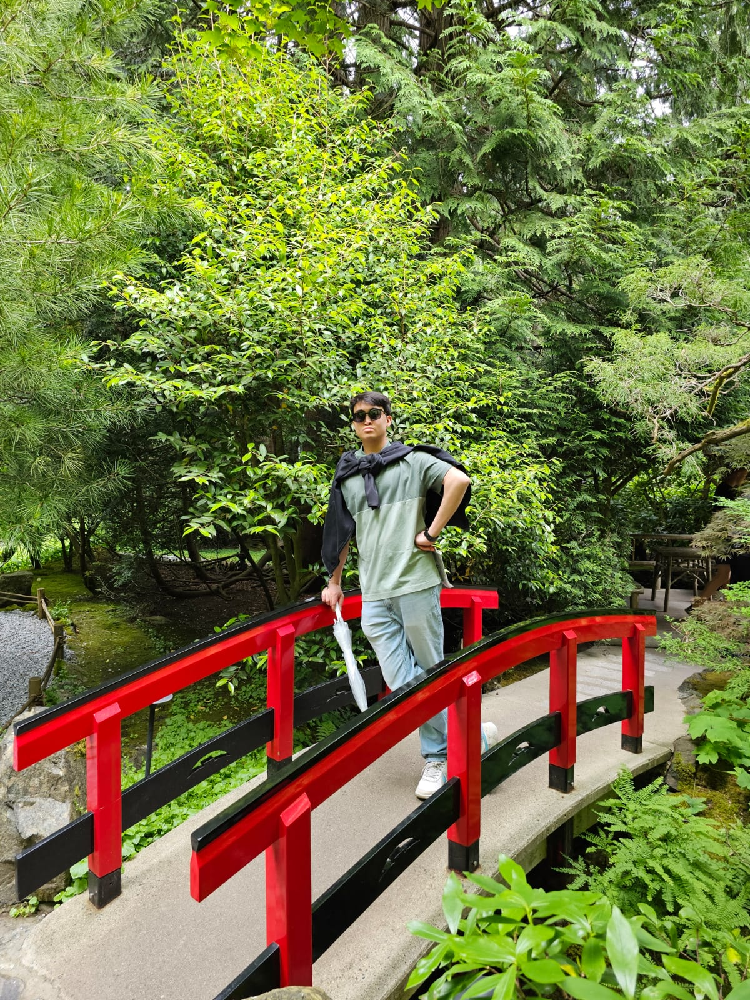

A Glimpse Into Saaim Japanwala 🔭🧍♂️
Hello! I’m Saaim Japanwala, a student at the University of Alberta located in Alberta, Canada. I have a passion for computers and programming 🧑💻.
I have experience with Python, Batch Scripting, HTML, CSS, and JavaScript. My goal is to make a meaningful impact through technology. Outside of academics and work, I enjoy playing various sports, with cricket being my current favorite. I also love learning new things—right now, I’m focused on mastering Rust for CLI program development. Additionally, I’m fascinated by AI and the workings of neural networks.
Welcome to my portfolio! Explore my work at your leisure, and if you'd like to discuss ideas or opportunities, don’t hesitate to reach out!